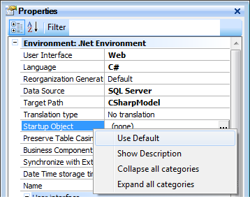

Unsetting an object is also very easy to do. Just open the context menu of the Startup Object property and select the "Use Default" value, as shown in the following figure. From now on, every time you press F5, GeneXus will run the process it deems necessary to successfully execute.  See also
Startup Object
|
| Backlinks | |
| Setting an Object as Startup Object | Startup Object |